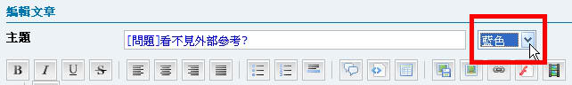
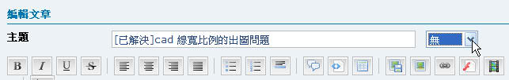
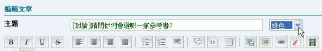
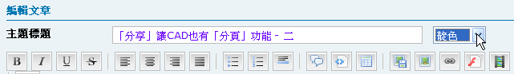

大家好：
討論主題標題請簡單敘述您的問題，內文最好詳細描述狀況，記得要說明你的AutoCAD版本，如果能貼圖片或上傳圖檔，可以有助於我們加速處理您的問題喔～
發表主題須知：
1.發表主題時分為[討論]及[問題]二種，[討論]可以持續討論(無期限)，[問題]期限為30天，超過期限將無法編輯修改主題。
2.建議主題中註明「軟體版本」及「狀況圖片」，有助於論壇會員朋友參考及即時協助。
3.如需提供DWG檔案，請上傳局部圖檔即可，DWG檔案僅供論壇會員朋友測試使用。
延伸主題：
發表主題前，請遵守相關要領：
一.發表問題時，請在主題前請加入[問題]，顏色請指定為[藍色]，論壇管理顧問會將您的主題置頂，方便大家即時討論。

二.當[問題]主題被回覆時，請原發問者測完之後要記得回報。期限內問題若順利解決，請編輯該主題在前面加入[已解決]，顏色請指定為[無]。[/color]

三.主題類型若為詢問方向或討論功能，請在主題前請加入[討論]，顏色請指定為[綠色]。討論主題沒有時間限制。

四.主題類型若為心得分享方面，請在主題前請加入[分享]，顏色請指定為[靛色]。

五.顧問論壇會持續追蹤原發問者的問題，不管有沒有解決都要做個處理回應，請勿任意棄置您的問題。謝謝配合!
請使用來編輯主題
註：請各位會員朋友撥空爬文，提問前可以先搜尋文章，這樣對於你我都有幫助，謝謝大家的配合喔～
[公告]多多善用搜尋功能
https://www.autocad-tw.com/forum-f14/topic-t1375.htm
主題分享：
「教學」Dropbox運用：申請安裝2GB免費網路硬碟空間(一)
「教學」Dropbox運用：電腦同步共用(更新)雲端資料(二)